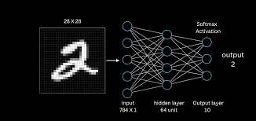
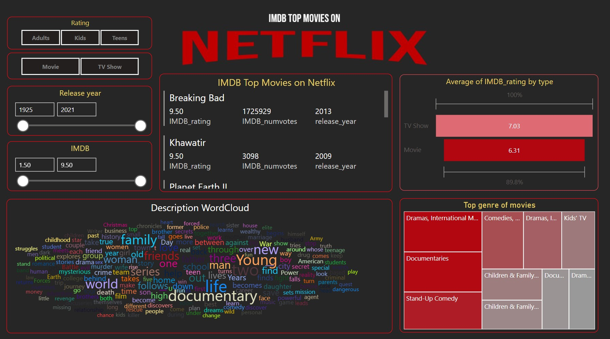

Projects
Bitcoin Forecasting
- Built a hybrid ANN-LSTM model treating Bitcoin both as a stock and currency across multi-year timeframes (2017–2024).
- Engineered feature sets from macroeconomic indicators, sentiment data, exchange rates, and technical signals.
- Deployed pipelines via Airflow, served Flask APIs in Docker, and automated versioning using MLflow.
- Integrated SHAP to interpret predictions and ensure model transparency.
Customer Churn Prediction
- Performed EDA and feature engineering on telecom customer data to identify churn risks.
- Trained logistic regression and ensemble models, improving both precision and recall.
- Used SHAP values for explainability and created dashboards for retention strategy insights.

Disease X Detection
- Trained a CNN in PyTorch using transfer learning and advanced augmentation techniques.
- Achieved 92% F1-score and 0.95 AUC on medical image data.
- Used SHAP-based visualizations to interpret model decision regions.
MNIST Digit Classifier
- Built a CNN using Keras & TensorFlow, achieving 99.3% test accuracy.
- Visualized layer activations, filters, and used dropout & batch normalization for tuning.
- Optimized model using Adam optimizer and early stopping.

IMDB Movie Analytics
- Designed a Power BI dashboard for 5,000+ movies categorized by ratings, revenue, and genre.
- Built filters and slicers for interactive drilldowns across production countries and budgets.
- Extracted actionable patterns to understand trends in audience behavior and box office success.
